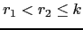
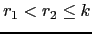

En esta sección introduciremos una máquina basada en registros.
Suponemos que la máquina tiene  registros
.
Las instrucciones toman dos argumentos, dejando el resultado en
el primer argumento. Son las siguientes:
registros
.
Las instrucciones toman dos argumentos, dejando el resultado en
el primer argumento. Son las siguientes:
LOADM Ri, [a] |
|
LOADC Ri, c |
|
STORE [a], Ri |
|
ADDR Ri, Rj |
|
ADDM Ri, [a] |
|
ADDC Ri, c |
|
| ... | ... |
El problema es generar el código con el menor número de instrucciones posible, teniendo en cuenta la limitación existente de registros.
Supongamos que queremos traducir un subárbol
y que la traducción del subárbol
requiere  registros
y que la traducción de
requiere
registros, con

.
Si realizamos primero la evaluación de
, debemos dejar el
resultado en un registro que no podrá ser utilizado en la evaluación de
. Si
, la evaluación de
podría dar lugar
a la necesidad de recurrir a almacenamiento temporal.
Esta situación no se da si evaluamos primero
.
En tal caso, dado que hay un registro en el que se guarda el resultado de
, quedan libres al menos
registros.
Como
se sigue que tenemos suficientes registros
para traducir
.
Como regla general es mejor evaluar primero el subárbol
que mayores requerimientos de registros tiene.
registros
y que la traducción de
requiere
registros, con

.
Si realizamos primero la evaluación de
, debemos dejar el
resultado en un registro que no podrá ser utilizado en la evaluación de
. Si
, la evaluación de
podría dar lugar
a la necesidad de recurrir a almacenamiento temporal.
Esta situación no se da si evaluamos primero
.
En tal caso, dado que hay un registro en el que se guarda el resultado de
, quedan libres al menos
registros.
Como
se sigue que tenemos suficientes registros
para traducir
.
Como regla general es mejor evaluar primero el subárbol
que mayores requerimientos de registros tiene.
La siguiente cuestión es como calcular los requerimientos en registros de una expresión dada. No consideraremos en esta fase límites en el número de registros disponibles. Obsérvese que si los requerimientos para los subárboles son distintos, la traducción puede realizarse usando el máximo de ambos siguiendo la estrategia de traducir primero el que mayores requerimentos tenga. Si son iguales entonces se necesitan registros ya que es necesario un registro para guardar el resultado de la primera traducción.
Nótese que, como el juego de instrucciones para un operando puede tener como segundo argumento una dirección de memoria, los ``segundos operandos'' no necesitan registro. Por ejemplo, el árbol se traduce por
LOADM R0, a PLUSM R0, b
Asi  no requiere registro, mientras que
no requiere registro, mientras que  si lo requiere. Por tanto, las
hojas izquierdas requieren de registro mientras que las hojas derechas no.
si lo requiere. Por tanto, las
hojas izquierdas requieren de registro mientras que las hojas derechas no.
Si  es un nodo de la forma
el número de registros
es un nodo de la forma
el número de registros  requeridos por
requeridos por  viene dado por
la fórmula:
viene dado por
la fórmula:
Dotaremos a cada nodo del AST de un método required_registers
que computa la demanda en registros de dicho nodo.
Lo que haremos es introducir en la clase Operation de la cual heredan
las operaciones binarias el correspondiente método required_registers:
package Operation;
our @ISA = ("Binary");
sub required_registers {
my $self = shift;
my $rl = $self->LEFT->required_registers('LEFT');
my $rr = $self->RIGHT->required_registers('RIGHT');
$self->{REQ_REG} = ($rl == $rr)? $rl+1: Aux::max($rl, $rr);
return $self->REQ_REG;
}
El segundo argumento que recibe required_registers es
su posición (izquierda o derecha) entre los hijos de su padre.
dicha información no es usada en los nodos binarios.
Su necesidad queda clara cuando se considera el cómputo
del número de registros requeridos por las hojas.
El cómputo en las hojas corre a cargo del correspondiente método
en la clase Value. Los nodos de tipo número (clase NUM), cadena
(clase STR) y variable (clase ID)
heredan de la clase Value.
package Value;
our @ISA = ("Leaf");
sub required_registers {
my $self = shift;
my $position = shift;
$self->{REQ_REG} = ($position eq 'LEFT') ? 1 : 0;
return $self->REQ_REG;
}
El atributo REQ_REG se computa para cada una de las sentencias
del programa:
package STATEMENTS;
sub required_registers {
my $self = shift;
my @sts = @{$self};
for (@sts) {
$_->required_registers;
}
}
Por supuesto los nodos ASSIGN y PRINT
poseen sus propios métodos required_registers.
Una vez computados los requerimientos en registros de cada
nódo, la generación de código para un nodo gestiona la
asignación de registros usando una cola en la que se guardan
los registros disponibles. Se
siguen básicamente dos reglas para la traducción de un
nodo Operation:
Hay cuatro casos a considerar: el primero es que el operando derecho sea una hoja. La generación de código para este caso es:
package Operation;
our @ISA = ("Binary");
...
sub gen_code {
my $self = shift;
if ($self->RIGHT->isa('Leaf')) {
my $right = $self->RIGHT;
my $a = $right->VAL;
my $rightoperand = $right->gen_operand; # valor o dirección
my $key = $right->key; # M, C, etc.
$self->LEFT->gen_code;
Aux::emit($self->nemonic."$key $RSTACK[0], $rightoperand # $a\n");
}
...
}
La generación del nemónico se basa en tres métodos:
nemonic devuelve el nemónico asociado con el nodo.
Por ejemplo, para la clase TIMES el código es:
sub nemonic {
return "MULT";
}
key devuelve el sufijo que hay que añadir
para completar el nemónico, en términos de como sea el
operando: C para los números, M para los
identificadores, etc.
gen_operand genera el operando. Así para las clases
número e identificador su código es:
package NUM;
...
sub gen_operand {
my $self = shift;
return $self->VAL;
}
|
package ID;
...
sub gen_operand {
my $self = shift;
return $symbol_table{$self->VAL}->{ADDRESS},
}
|
El resto del código distingue tres casos,
según sean  ,
y el número de registros
disponibles.
Los dos primeros casos desglosan
la posibilidad de que uno de los dos subárboles
pueda realizarse con el número de registros
disponible (
).
El tercer caso corresponde a que
se necesiten temporales:
.
,
y el número de registros
disponibles.
Los dos primeros casos desglosan
la posibilidad de que uno de los dos subárboles
pueda realizarse con el número de registros
disponible (
).
El tercer caso corresponde a que
se necesiten temporales:
.
1 ...
2 if ($self->RIGHT->isa('Leaf')) { ... }
3 else { # Hijo derecho no es una hoja
4 my ($t1, $t2) = ($self->LEFT, $self->RIGHT);
5 my ($r1, $r2) = ($t1->REQ_REG, $t2->REQ_REG);
6
7 if ($r1 < Aux::min($r2, $NUM_REG)) {
8 $t2->gen_code;
9 my $R = shift @RSTACK;
10 $t1->gen_code;
11 Aux::emit($self->nemonic."R $RSTACK[0], $R\n");
12 push @RSTACK, $R;
13 }
14 ...
15 }
En este caso debemos realizar primero la traducción
del hijo derecho. Salvando su resultado en $R.
El registro es retirado de la cola y traducimos el
lado izquierdo. El resultado ha quedado en el primer
registro de la cola. Emitimos la operación, añadiendo
el sufijo R, ya que se trata de una operación entre registros
y posteriormente devolvemos el registro a la cola.
push @RSTACK, $R
por
unshift @RSTACK, $R
¿Seguiría funcionando el código?
$t2
(línea 8) se ha realizado integramente en los registros?
Los otros dos casos tienen similar tratamiento:
if ($self->RIGHT->isa('Leaf')) { ... }
else { ...
if ($r1 < Aux::min($r2, $NUM_REG)) { ... }
elsif (($r1 >= $r2) and ($r2 < $NUM_REG)) {
$t1->gen_code;
my $R = shift @RSTACK;
$t2->gen_code;
Aux::emit($self->nemonic."R $R, $RSTACK[0]\n");
unshift @RSTACK, $R;
}
elsif (($r1 >= $NUM_REG) and ($r2 >= $NUM_REG)) {
$t2->gen_code;
Aux::emit("STORE $T, $RSTACK[0]\n");
$T++;
$t1->gen_code;
$T--;
Aux::emit($self->nemonic."M $RSTACK[0], $T\n");
}
}
}
Antes de comenzar a generar el código,
la variable $T debe ser inicializada a un valor apropiado,
de manera que se usen direcciones no ocupadas por los datos.
Por ejemplo:
local $T = $final_global_address+length($data);
El método gen_code sólo debería ser llamado sobre una hoja
si se trata de una hoja izquierda (en cuyo caso el número de
registros requeridos es uno):
package Value;
our @ISA = ("Leaf");
...
sub gen_code {
my $self = shift;
my $a = $self->VAL;
if ($self->REQ_REG == 1) {
if (ref($self) eq "NUM") { Aux::emit("LOADC $RSTACK[0], $a\n"); }
else {
my $address = $symbol_table{$a}->{ADDRESS};
Aux::emit("LOADM $RSTACK[0], $address # $a\n");
}
}
else {
croak("gen_code visita hoja izquierda con REQ_REG = ".$self->REQ_REG);
}
}
La pila de registros es inicializada al número de registros disponibles:
use constant LAST_REG => 1; our @RSTACK = map "R$_", 0..LAST_REG; # Registros disponibles
required_registers
match_and_transform?
¿Sería necesario introducir modificaciones
en match_and_transform? Si es así, ¿Cuáles?.